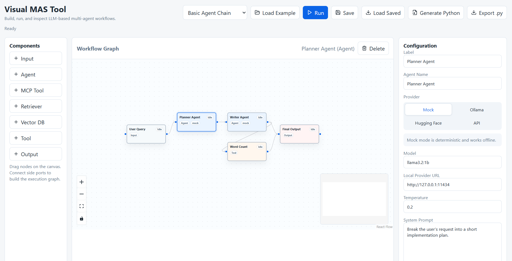

View case studyVisual Multi-Agent Orchestration Platform
2026Built a full-stack multi-agent platform with React Flow, RAG pipelines, MCP-compatible tooling, and runtime execution tracing for configurable workflows.
React
Python
RAG